Task 2: Lakeshore returns in the semantic model and ontology
Assignment 1: MySQL · Assignment 2: OneLake · Assignment 3: Inventory · Assignment 4: Semantic lifecycle · Assignment 5: Ontology · Task 1: Returns data · Task 2: Returns in the model and ontology
In Task 1 you loaded Lakeshore returns into OneLake and found the problem with SQL. In this task you make the answer reusable: you add the returns tables to the semantic model from Assignment 4, define two measures, and extend the ontology from Assignment 5 with a new Return entity type and its relationships. Then you answer "which stores have a returns problem?" from the model.
You need your Task 1 warehouse tables, your LakeshoreInventorySemantic model from Assignment 4 and your ontology from Assignment 5. Allow 75 minutes. The screenshots are from a real run; your names will differ slightly.
Part 1: Add returns to the semantic model
- Open your semantic model and select Edit tables. Select
FactReturns,DimReasonModelandFactStoreSalesWeeklyfromLakeshoreInventoryDW, then confirm. The tables take a minute to appear. If the model is read-only after a reload, switch the mode to Editing.
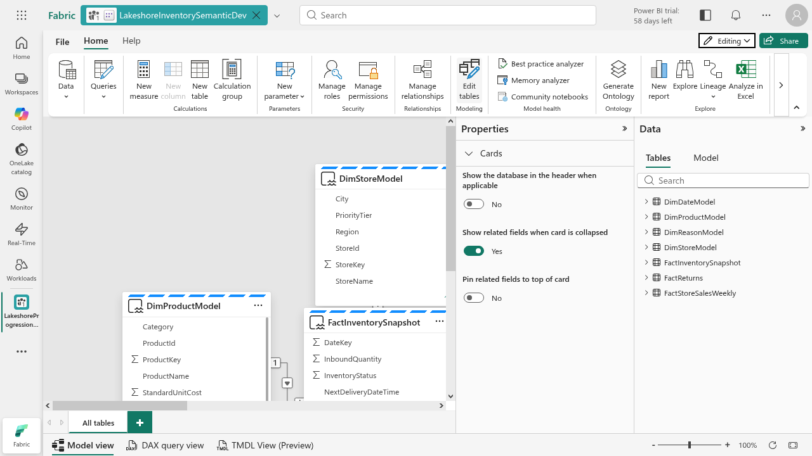
- Select Manage relationships > New relationship. Create five many-to-one relationships, each with a single filter direction:
FactReturns[StoreKey]toDimStoreModel[StoreKey],FactReturns[ProductKey]toDimProductModel[ProductKey],FactReturns[ReasonKey]toDimReasonModel[ReasonKey],FactStoreSalesWeekly[StoreKey]toDimStoreModel[StoreKey]andFactStoreSalesWeekly[ProductKey]toDimProductModel[ProductKey].
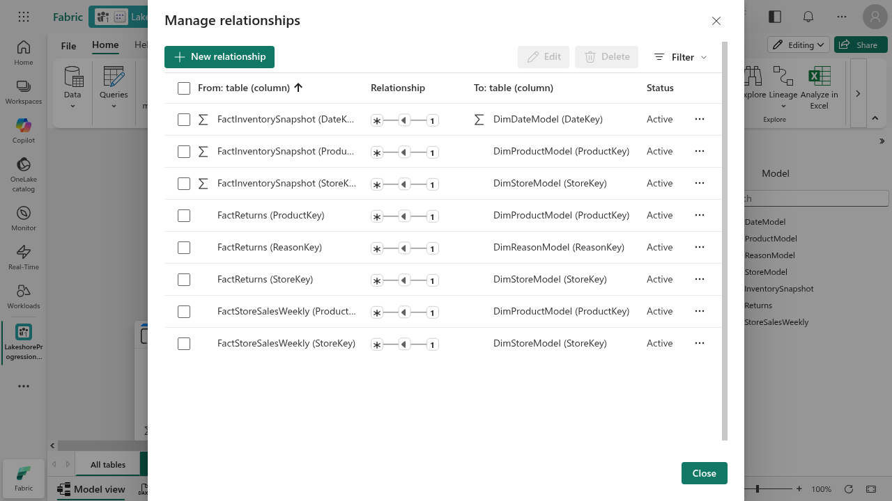
Both fact tables share the store and product dimensions. That is what lets one store row hold both units returned and units sold.
Part 2: Add two measures
- Select
FactReturns, choose New measure and enter the formula in the formula bar:Refund Total = SUM(FactReturns[RefundAmountUSD]). - Add a second measure:
Return Rate = DIVIDE(SUM(FactReturns[ReturnQuantity]), SUM(FactStoreSalesWeekly[UnitsSold])).
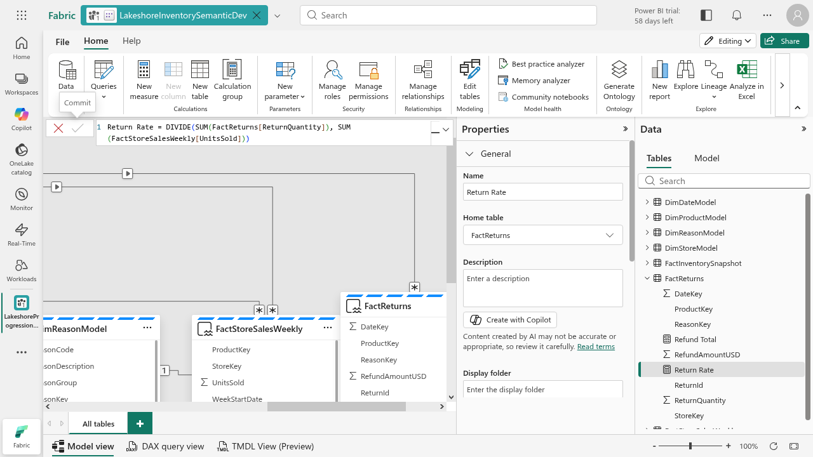
Part 3: Test the model
- Open the DAX query view and run this query:
EVALUATE
SUMMARIZECOLUMNS(
DimStoreModel[StoreName],
"Returned units", SUM(FactReturns[ReturnQuantity]),
"Refund Total", [Refund Total],
"Return Rate", [Return Rate]
)
ORDER BY [Return Rate] DESC- Denver Market returns 90 units and $633.8 with a Return Rate of 0.07. The other stores are about 0.02 to 0.03.
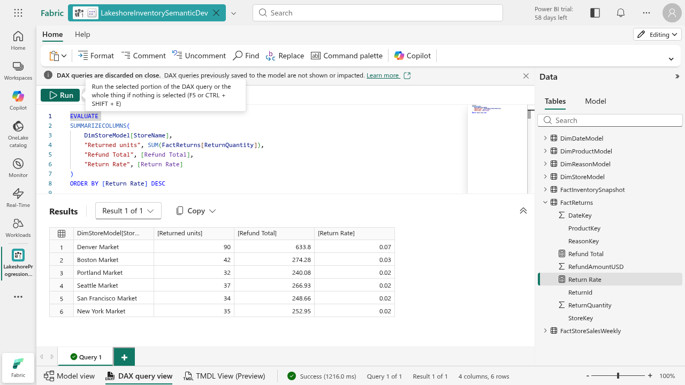
Return Rate shows as a decimal here: 0.07 means 7%. This matches the 7.37% you found in Task 1.
The Edit tables and Manage relationships screens can be slow. If an Apply from a script fails with "Semantic model out of sync", use the New relationship dialog instead, as in step 2.
Part 4: Extend the ontology with Return
An ontology entity needs a table in a lakehouse in the same workspace as the ontology. Use the workspace that holds your ontology and its lakehouse.
- Upload
fact_store_returns.csvto the lakehouse Files, then load it to a table. Fabric lowercases the name, so the table isstorereturnsif you name it that way. Wait for the load to finish.
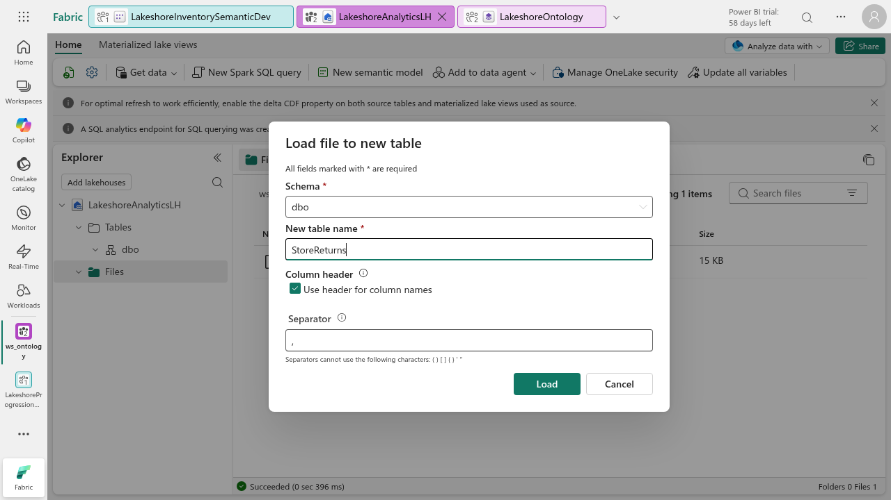
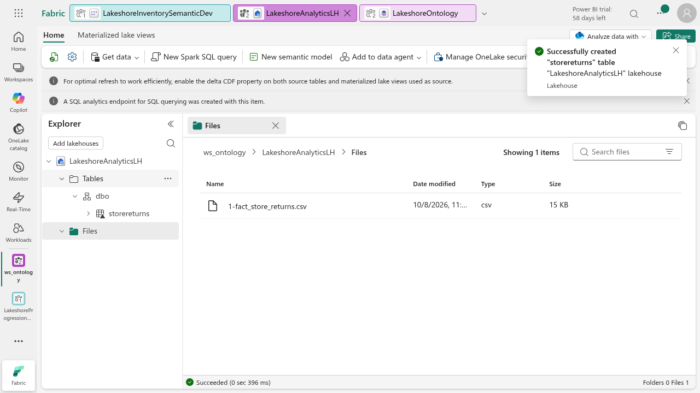
- Open your ontology. Select Add entity type, name it
Returnand create it.
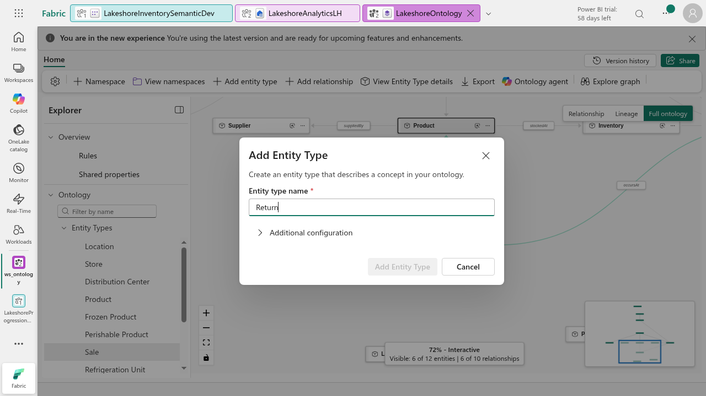
- Open Return, select Manage property bindings, choose the lakehouse and the returns table, and bind it. The seven columns map to properties automatically: ReturnId, ReturnDateTime, StoreId, ProductId, ReasonCode, ReturnQuantity and RefundAmountUSD.
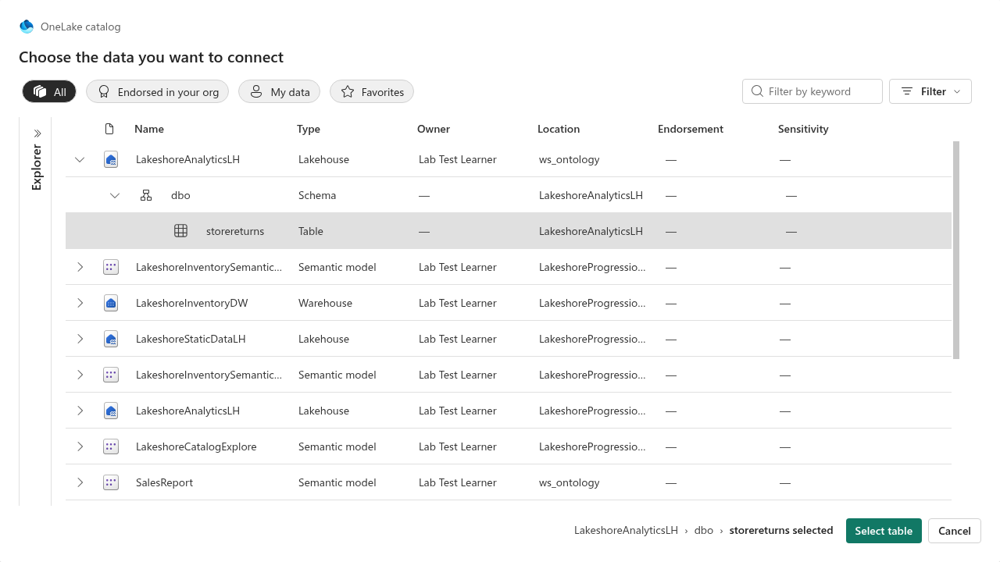
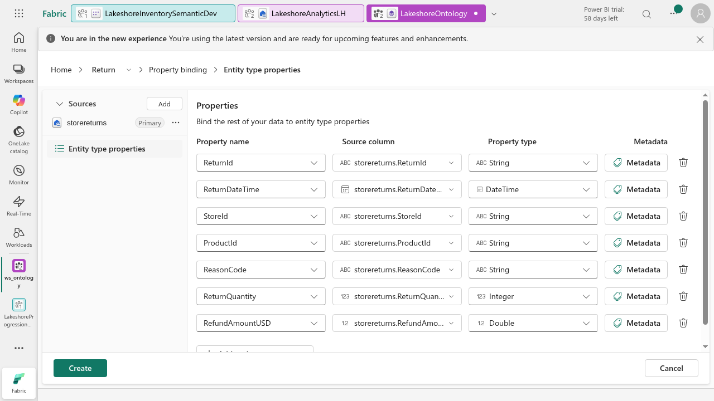
- Select Define entity type key, choose
ReturnIdand save. One return is one row, so ReturnId is unique.
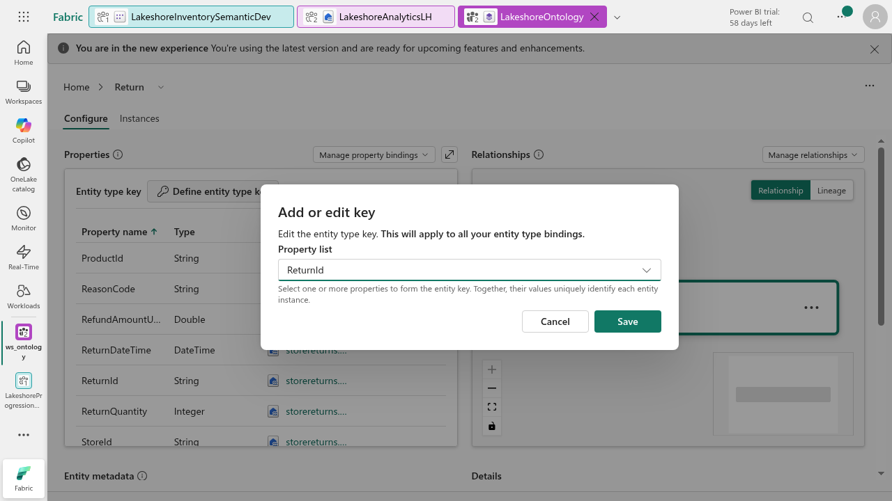
Part 5: Add the relationships
- On Return, select Manage relationships > Add new relationship. Name it
returnedAt, set origin Return and target Store, and create it.
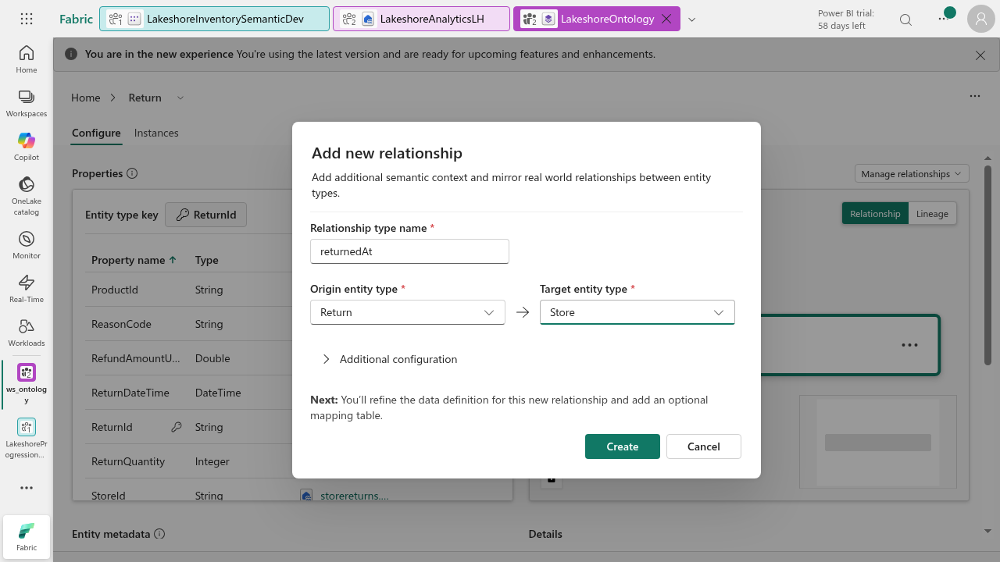
- On the relationship page, map the origin property
StoreIdto the target keyLocationId(the Store key in this ontology) and save.
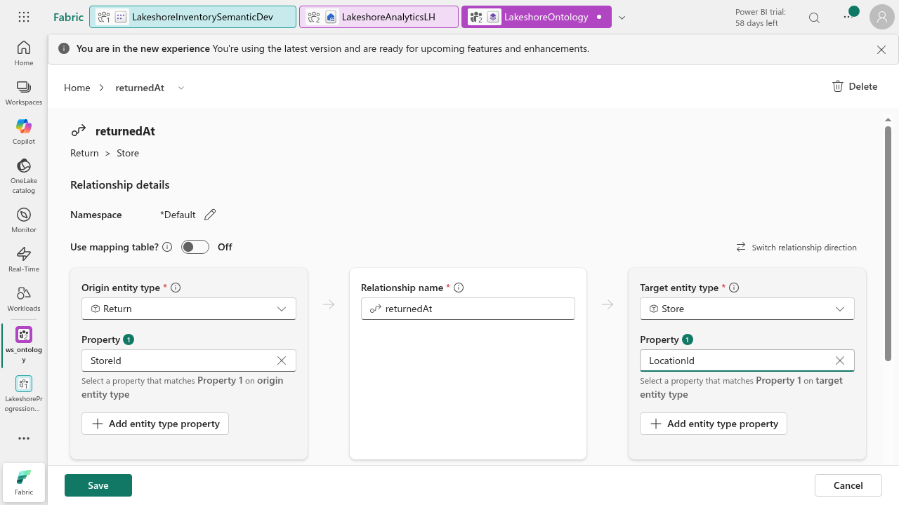
- From Home select Add relationship and create
forProductReturnfrom Return to Product. Open it and mapProductIdtoProductId, then save.
The reasons table is not an entity in this ontology, so ReasonCode stays as a Return property. Add a Reason entity later if you want to browse reasons as objects.
Part 6: Test the ontology and answer the question
- On Home, search for Return in the Explorer and select it. Return connects to Store with
returnedAtand to Product withforProductReturn, next to the existing relationships. - Answer the question: Denver (S-DEN-01) has the returns problem, at about 7.4% of units sold against 2 to 3% elsewhere. Boston at 3.1% is worth a watch.
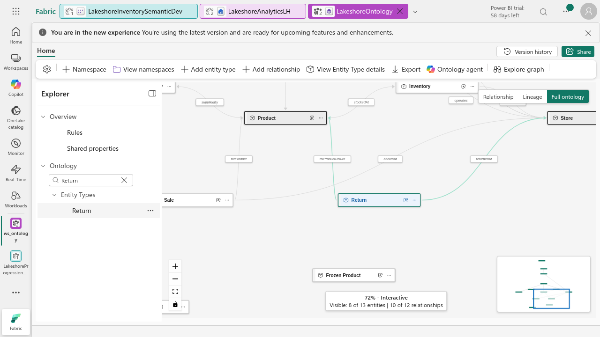
We skip the ontology graph in this task. Graph materialization can fail in some tenants, and the answer comes from the semantic model.
Part 7: Submit
Submit the DAX result screenshot, the relationships screenshot and the ontology canvas screenshot, plus one sentence naming the store and its return rate.